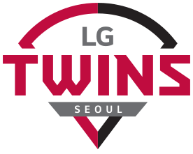
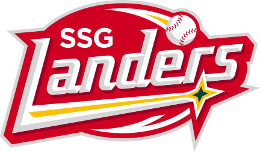
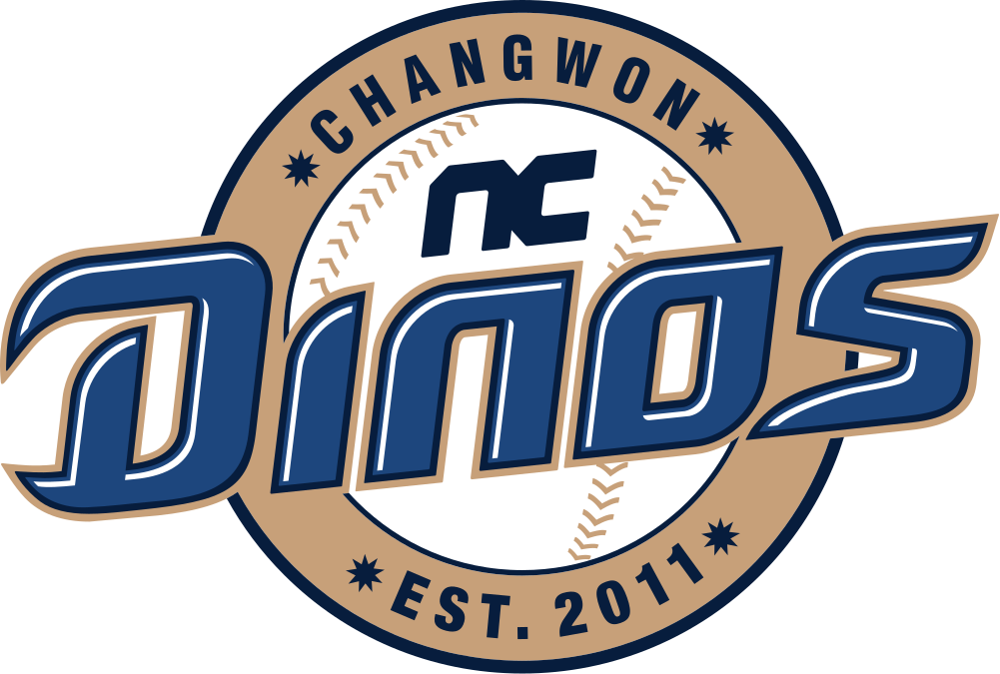
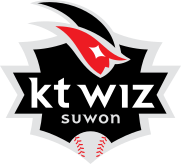
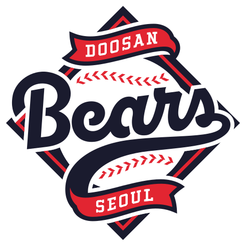
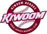

KBO 리그
참가 구단
[ 펼치기 · 접기 ]












- 1. 개요 (바다의 제왕)
- 2. 지배 구조 (청정 회계의 상징)
- 3. 디자인
- 3.1. 색상 (아쿠아 블루 논란?)
- 3.2. 마스코트 및 공식 앰버서더 (등번호 30번)
- 4. 홈구장 (먹거리와 굿즈의 성지)
- 5. 역사 (해체 위기를 딛고)
- 6. 팀 컬러 (해일 야구)
- 7. 팬 (아재와 오타쿠의 대통합)
- 8. 응원 (HAPPY PARTY TRAIN)
- 9. 타 구단과의 관계
- 10. 여담 (승리 요정 박효빈)
1. 개요 (바다의 제왕)
대한민국의 KBO 리그 소속 프로야구단. 효빈광역시를 제1연고지로 삼고 있으며, 지역 중견기업의 신화이자 시민들의 기업인 회주기업이 든든한 모기업이다. 프로야구 원년(1982년) 창단 구단 중 하나로, 거대한 항만과 바다가 발달한 해양 도시 효빈의 특성을 살려 길잡이이자 바다의 제왕인 돌고래(Dolphin)를 상징으로 삼았다.
최근 효빈광역시가 박효빈 시장의 주도 하에 '서브컬처의 수도'로 거듭나면서 구단의 마케팅 행보도 미쳐 돌아가고 있는데, 대한민국 프로스포츠 사상 최초로 2D 애니메이션 캐릭터를 공식 앰버서더로 기용하는 광기 어린 파격적인 행보를 선보여 전국의 야구팬들과 오타쿠들을 효빈종합운동장으로 강제 집결시키고 있다. 이쯤 되면 이게 프로야구단인지 대형 굿즈 판매처인지 헷갈릴 지경이다.
2. 지배 구조 (청정 회계의 상징)
구단의 지분은 회주기업그룹 지주사인 회주홀딩스가 100% 소유하고 있다. 회주공업의 창업주 故 박신유 회장이 "단순한 공놀이가 아니다. 고단한 효빈 시민들에게 한여름 밤의 희망과 홈런을 보여주겠다"며 창단한 이래, 아들인 현 박성인 회장 체제에서도 전폭적인 지지와 투자를 받고 있다.
재계 서열 한 자릿수의 거대 대기업 구단들에 비해 모기업의 자본 규모가 압도적으로 크진 않지만, 회주유통(HJ몰) 등 알짜배기 계열사들의 든든한 현금 창출력과 회주기업 특유의 '결백한 청정 회계'를 바탕으로 구단을 매우 알뜰하고 탄탄하게 운영하는 것으로 정평이 나 있다. 과거 윤대환 시장의 사주를 받은 국세청 직원들이 야구단 장부를 탈탈 털러 왔다가, 단 1원의 횡령도 없는 완벽한 장부를 보고 감동의 눈물을 흘리며 야구 티켓만 제값 주고 사갔다는 전설이 있다.
3. 디자인
3.1. 색상 (아쿠아 블루 논란?)
창단 초기부터 깊은 바다를 상징하는 오션 블루(Ocean Blue)와 부서지는 맑은 파도를 연상케 하는 에메랄드 그린(Emerald Green)을 메인 컬러로 사용하고 있다. 유니폼 역시 핀 스트라이프에 에메랄드 포인트가 들어가 있어 KBO 내에서도 손꼽히는 예쁜 디자인으로 유명하다.
최근에는 공식 앰버서더의 퍼스널 컬러를 강하게 의식한 듯 유니폼의 에메랄드 그린 채도가 미세하게 아쿠아(Aqours) 멤버 컬러에 가깝게 쨍해졌다는 팬들의 날카로운 지적이 빗발쳤으나, 구단 마케팅팀은 "야구장 조명의 빛 반사에 의한 착시 현상일 뿐"이라며 뻔뻔하게 얼버무렸다(...).
3.2. 마스코트 및 공식 앰버서더 (등번호 30번)
공식 기본 마스코트는 돌고래를 귀엽게 의인화한 '피니(Phiny)'와 '돌피(Dolphy)'이다.
그러나 2020년대 들어 이 구단의 진정한 알파이자 오메가, 실질적 마스코트 겸 공식 앰버서더로 활동하고 있는 존재는 다름 아닌 러브라이브! 선샤인!!의 마츠우라 카난이다.
이것은 1회성 이벤트 콜라보가 아니다. 구단 공식 홈페이지 선수단 로스터(명단) 맨 끝 투수조와 타자조 사이에 당당히 등번호 30번을 달고 공식 앰버서더로 등록되어 있다. 심지어 카난의 성우인 스와 나나카가 직접 효빈종합운동장에 등판해 시구를 던지고 갔을 정도다. 수산물 시장 홍보대사나 아쿠아리움 마스코트가 아니라 명실상부한 프로야구단 정식 앰버서더다.
4. 홈구장 (먹거리와 굿즈의 성지)
홈구장은 효빈종합운동장 내에 위치한 야구장 시설(약 2만 2천 석 규모)을 사용 중이며, 80년대 지어진 연식이 무색할 정도로 화장실과 좌석 퀄리티가 최상급이다.
보통 지방 구장의 경우 세월이 지나면 비가 새고 낙후되어 원성이 자자해지기 마련이나, 회주기업 특유의 결벽증에 가까운 꼼꼼한 관리와 지속적인 유지보수 리모델링 덕분에 쾌적한 관람 환경을 자랑한다. 구장 내 입점한 식음료 매장 대부분이 HJ몰(회주유통) 소속이라 F&B(먹거리) 퀄리티도 상당하다. 명물로는 '돌핀즈 수제 새우버거'와 콜라보 한정판 '아쿠아 블루 레모네이드'가 있다.
특히 1층 메인 굿즈 샵에서는 유니폼뿐만 아니라 회주공업 화학사업부의 초고순도 수지로 자체 제작한 애니메이션 콜라보 피규어와 네소베리를 잔뜩 쌓아놓고 팔고 있어 원정 팬들의 지갑을 무자비하게 털어간다. 구장 인프라가 꽤나 받쳐주다 보니 선거철마다 신축 돔구장 떡밥이 나와도 팬들이 "지금 구장도 훌륭한데 굳이 세금 낭비할 필요 있나?"라며 자체 컷트해버리는 진풍경이 벌어진다. 야구 티켓값 1만 5천 원 내고 들어와서 굿즈와 식비로 15만 원을 쓰고 나가는 기적의 구장.
5. 역사 (해체 위기를 딛고)
전통적인 중상위권의 다크호스 강호였으나, 2006~2007년 최악의 빌런 윤대환 전 효빈시장 재임 시절 팀이 말 그대로 공중분해, 해체 직전까지 가는 최악의 위기를 겪었다.
당시 7호선(효빈전차) 폐선과 시내버스 독점에 혈안이 되어 있던 윤대환 시장이 전차 운영사이자 구단 모기업인 회주기업을 압박하고 길들이기 위해, 시의회를 조종해 "시 체육 지원 예산 전면 삭감" 및 "효빈야구장 사용료 10배 기습 인상", "야구장 전기 단전 협박"이라는 야만적이고 치졸한 횡포를 부린 것이다.
결국 2007년 시즌은 훈련 시설 이용 제한과 선수단 사기 저하로 창단 첫 최하위(꼴찌)를 기록할 뻔했으나, 야구단을 살리기 위한 시민들의 눈물겨운 '1인 1티켓 사주기 운동'과 회주기업 박성인 사장의 "내 사재를 털어서라도 선수단 연봉은 준다"는 결사 항전으로 간신히 버텨냈다. 2008년 윤대환이 뇌물 수수로 구속되고 당선무효로 쫓겨난 이후, 분노의 버프를 받은 돌핀즈는 보란 듯이 반등하여 다시금 가을야구 단골손님으로 완벽히 부활했다.
6. 팀 컬러 (해일 야구)
일명 '해일(Tsunami) 야구'. 번트와 도루로 1점을 쥐어짜 내는 쩨쩨한 스몰볼보다는, 한 번 타선이 터지면 쓰나미처럼 걷잡을 수 없이 몰아치는 장타력 위주의 선 굵은 빅볼(Big Ball)을 선호한다.
외야가 탁 트인 효빈종합운동장 특유의 바닷바람(해풍)을 역이용해 큼지막한 타구를 담장 밖으로 넘겨버리는 거포 외야수들이 즐비하다. 선발진이 무너지거나 불펜진 방화로 역전당할 위기에 처해도, 8~9회에 빠따(타격)로 다시 뒤집어버리는, 관중들 심장을 쫄깃하게 만들다 못해 터뜨려버리는 마라맛 야구를 구사한다.
7. 팬 (아재와 오타쿠의 대통합)
효빈 시민들의 엄청난 애향심을 바탕으로 한 콘크리트 지지층을 자랑한다. 윤대환 시장 시절 구단 해체 위기를 비바람 맞으며 함께 극복했다는 끈끈한 전우애가 있어, 프런트나 선수들이 연패에 빠져도 쌍욕을 하기보다는 "마! 쫌 똑바로 안 하나!" 하고 소주 한 잔 마시며 품고 가는 온건파 아저씨 팬들이 주류였다.
그러나 2020년대 들어 1루 응원석의 생태계가 완전히 뒤바뀌었다.
박효빈 시장 취임 이후 효빈시 전체가 서브컬처 수도로 급부상하고, '성덕' 박성인 회장님의 덕력이 결합된 미친 콜라보 마케팅 덕분에 젊은 오타쿠 팬덤이 쓰나미처럼 유입된 것. 현재 1루 응원석에서는 야구 유니폼 대신 애니메이션 핫피(축제용 겉옷)를 입고 블레이드(응원봉)를 흔드는 진성 오타쿠와, 편의점 소주 팩을 들고 오징어를 씹는 올드 아재 팬이 나란히 어깨동무를 하고 응원가를 부르는 기묘하고도 훈훈한 대통합이 이루어지고 있다.
8. 응원 (HAPPY PARTY TRAIN)
타 구단이 클래식이나 뻔한 대중가요, 트로트를 응원가로 쓸 때, 회주 돌핀즈는 저작권료를 두둑하게 지불하고 유명 애니메이션 OST를 과감하게 차용한다.
특히 8회 말 돌핀즈의 공격이 시작될 때, 앰버서더 마츠우라 카난의 전설적인 센터곡인 'HAPPY PARTY TRAIN'이 야구장 대형 전광판에 풀버전으로 울려 퍼지는 시간은 다른 구단 부럽지 않은 장관이자 종교 의식(?)을 연출한다. 2만 명이 넘는 관중이 일제히 에메랄드 그린 빛으로 스마트폰 플래시와 블레이드를 켜고 "레일은 어디까지나 이어져 있어! (Rail wa doko made mo tsuzuiteiru!)"를 한국어 발음으로 미친 듯이 떼창하는 모습은, 원정 온 타 팀 팬들에게 엄청난 문화 충격과 공포를 선사하며 혼을 쏙 빼놓는다.
9. 타 구단과의 관계
과거 군사정권 시절 정부의 압박 속에서도 노면전차를 지켜내고 꿋꿋하게 버틴 회주기업의 역사적 동질감 덕분에, 롯데 자이언츠나 삼성 라이온즈 같은 원년 영남권 팀들과는 '오랜 세월을 함께 버틴 끈끈한 전우' 같은 느낌을 강하게 공유한다.
특히 해양 도시 라이벌인 롯데와의 매치업은 '항구 시리즈(Port Series)'라 불리며, 양 팀 팬들이 경기 전 경기장 밖에서 지역 해산물 안주(...)와 한정판 굿즈를 교환하며 훈훈하게 즐기는 거대한 지역 축제로 유명하다.
10. 여담 (승리 요정 박효빈)
- 성덕 회장님의 샤머니즘: 회주기업의 박성인 회장은 야구장 VIP 스카이박스에 올 때마다, 구장 굿즈샵에서 갓 뽑아낸 한정판 미소녀 피규어를 유리창 앞에 일렬로 전시해 둔 채 경기를 관람한다. 타선이 터지지 않고 빈타에 허덕이면 피규어들의 방향을 일제히 마운드 쪽으로 돌려놓는 기믹이 있다(...).
효과가 은근히 좋다는 게 함정이다. - 시장의 직관과 승리 요정: 효빈시 1호선 마스코트 '고나미'의 광팬이자 진성 덕후인 박효빈 시장(1996년생)이 평상복 차림으로 거대한 네소베리 인형을 안고 1루 블루존(응원 단상 앞)에 매우 자주 출몰한다. 경호원도 없이 치어리더석 근처에서 블레이드를 흔들며 춤추다가 중계 카메라에 대문짝만하게 잡힌 것만 수십 번이다. 신기하게도 시장님이 직관 온 날은 돌핀즈의 승률이 무려 8할 5푼에 달해 팬들 사이에서는 '효빈의 승리 요정'으로 불리며, 지고 있을 땐 "시장님 빨리 1루로 오이소!"라는 절규가 쏟아진다.
- 카난의 허그 세리머니: 카난이 공식 앰버서더로 지정된 이후, 돌핀즈 투수들이 완봉승이나 터프 세이브를 거두면 경기 종료 후 마운드에서 포수와 하이파이브를 하는 대신, 아주 격렬하고 숨 막히는 '카난식 프리허그(HUG Shiyo!)'를 깊게 나누는 것이 팀 내 굳건한 전통으로 자리 잡았다. 근육질의 덩치 큰 야구선수들이 땀범벅이 된 채로 서로 부둥켜안는 모습이 여성 팬들에게 나름의 거대한 모에 포인트로 작용하고 있다.
- 홈런 인형: 돌핀즈 타자가 홈런을 치고 덕아웃으로 들어오면, 동료 선수들이 일반적인 구단 마스코트 인형 대신 거대한 '카난 메가 점보 네소베리'를 타자의 머리통 위에 씌워주며 헬멧을 두드리는 세리머니를 한다. 홈런 타자 인터뷰 때도 네소베리를 품에 안고 인터뷰를 진행해야 한다.